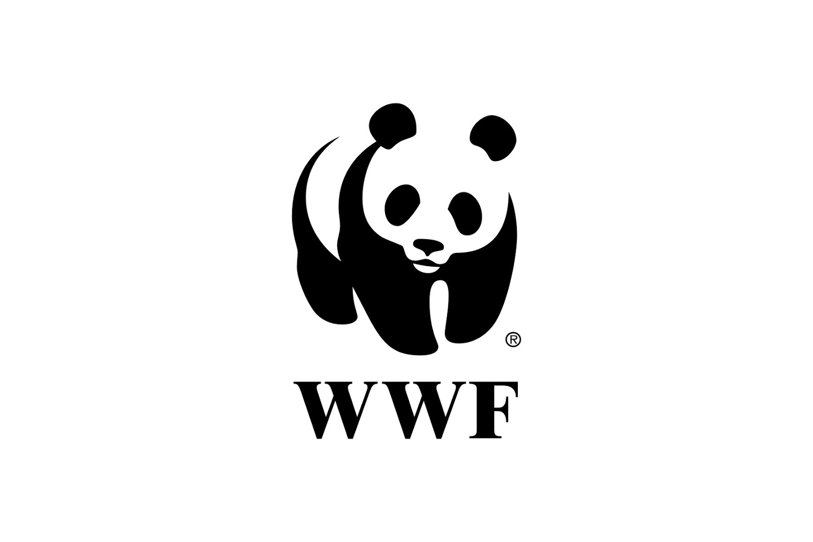

Chimpazees also known as Pan troglodytes are native to the forests of Central and West Africa, they inhibit various elements, including rainforests, savanaas and woodlands. They are known to be highly inteligent as they share more than 98% of their DNA with humans! They are also known for being able to use tools such as sticks and items around them either open up things or use them to their advantage in order to build something. Chimpanzees are omnivours meaning that they eat both meat and fruits and vegtables just like humans!
They live in a social group strucutre where there is an alpha male and female that look over the shrewdness, a shrewdness is what we call a group of apes or Chimpanzee similar to how a group of lions are called a pride and wolves move in packs.
Habbitat loss, deforestation and human development have led to the destruction and fragmentation of chimpanzee habitats. As forests are cleared for agriculture, logging, and urbanization, the available living space for chimpanzees diminishes. This leads to reduced habitats resulting in food scarcity, limited mating opportunities, and increased human-wildlife conflict as chimpanzees venture closer to human settlements.
Additionally, since chimpanzees interact alot with humans they are very suseptile to diseases transmitted by humans. As there immune system is not as strong as ours even though they share a large part of their DNA with us. Espeically diseases such as respiratory infections and deadly viruses can decimate entire communities, weakening the genetic diversity and resilience of chimpanzee populations.
Adding onto the habbitat loss, this inherinatly forces chimpanzees to come into closer contact with humans thus forcing more diseases and loss upon them This overall leads to a cycle of chimpanzees rapidly dying off faster than they can grow.
Spread Awareness: Share campaign materials on social media platforms to raise awareness among your friends, family, and followers. Use your online presence to disseminate information about primate conservation.
Support Organizations: Contribute to reputable organizations dedicated to primate conservation through donations or volunteering. These organizations play a crucial role in on-the-ground efforts to protect and rehabilitate primate populations. Some organizations are "World Wildlife Fun", "Wildlife Conservation Society" and "The Humane Society of the United States"
Educate Others: Act as an advocate for primate conservation in your community. Share your knowledge, engage in conversations, and educate others about the importance of preserving primate habitats and supporting conservation initiatives.
Adopt Sustainable Practices: Make environmentally conscious choices in your daily life. Reduce your carbon footprint, support sustainable products, and be mindful of the impact of your actions on the environment and wildlife. Some ways you can reduce your carbon footprint are to reduce, resuse and recycle. Opt for renewable energy sources such as solar or wind power and conserve water.
